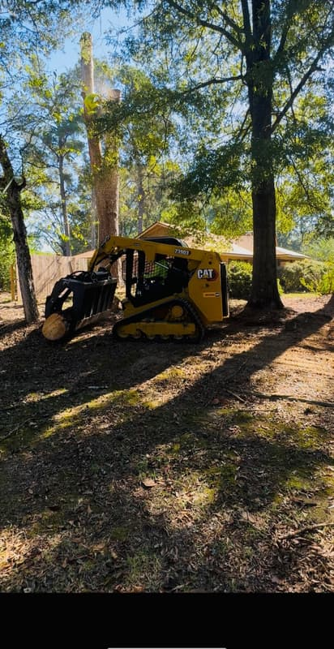
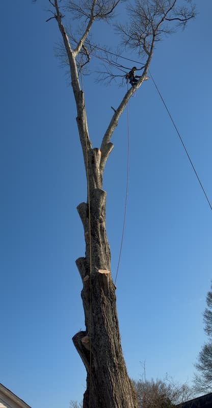
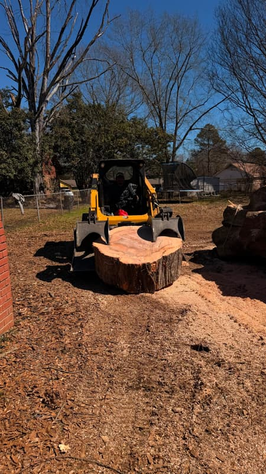
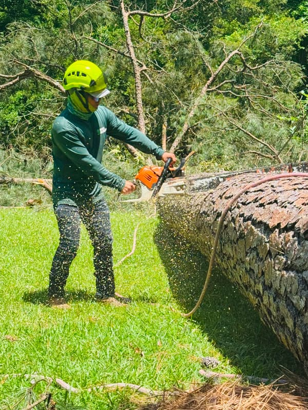
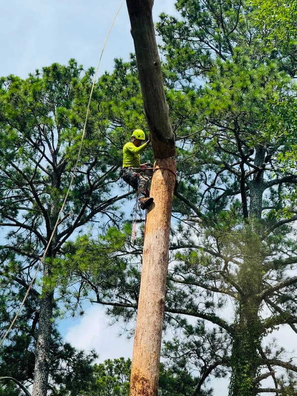

Our own equipment
The machines are ours — skid steers, chippers, grinders, trucks and excavators — so your job never waits on a rental.
Tree care · Jackson, MS · 24/7
From taking a tree down to planting a new one — trimming, stumps, lot clearing, grading, flower beds and fences too.
Bonilla Tree Service is a licensed and insured local crew caring for homes and businesses in Jackson, Mississippi and the surrounding areas. Whatever your yard needs — removal, trimming, pruning, stumps, lot clearing, grading, planting, flower beds or a new fence — our own crew and equipment handle it, and everything gets hauled away before we leave. We're here 24 hours a day, 7 days a week, we schedule around you, and estimates are always free. You can find our reviews on Facebook.

The machines are ours — skid steers, chippers, grinders, trucks and excavators — so your job never waits on a rental.

Our crew climbs, so we can reach trees in tight backyards where a bucket truck can't go.

Wood, branches and stumps leave with us — nothing gets left piled at the curb.
Storm & emergency response
You don't have to wait until morning. We pick up the phone 24 hours a day, 7 days a week, and we come out with our own crew and equipment.
Call us right away if:

Disaster response · Nationwide
After a hurricane, a tornado or a bad ice storm, whole neighborhoods get closed off by fallen trees, and the local crews are booked solid within hours. That is when we load up and drive out, even if it is several states away, to help clear it.
What we go out for
Hurricanes, tornadoes, and heavy wind or ice storms — the kind of damage that leaves more trees down than the local crews can reach.
What we bring
Our own crew and our own machinery, hauled in on our trucks — we do not show up looking to rent equipment that is already spoken for.
What we do there
Cut trees off houses and cars, open up blocked driveways and roads, and haul the debris out so people can get back in.
Day to day, our regular work is right here in Jackson, Mississippi and the surrounding areas. The out-of-state travel is for storm and disaster work only — if that is why you are calling, tell us and we will let you know right away how soon we can get there.
About us
Owner-operated · Jackson, Mississippi
Bonilla Tree Service LLC is an owner-operated tree company that has spent the last four years serving Jackson, Mississippi and the areas around it, for homes and businesses alike. The crew is ours and so are the machines, which means your job never gets passed to a subcontractor or stuck waiting on a rental.
We keep climbers on the crew, so tight backyards and hard-to-reach corners get done without a bucket truck. We're licensed and insured, estimates are free, and your yard gets cleaned up before we leave. And when a storm hits, we answer — 24 hours a day, 7 days a week.

List of services
01
Dead, damaged or just in the way — we take the tree down safely, even in tight spaces, and haul it all off the same day.
02
We trim back overgrown branches so your trees look good, stay healthy, and stop scraping the roof or shading the whole yard.
03
Careful cuts while a tree is growing help it grow strong and in the right shape — fewer weak branches to drop later.
04
We grind the stump down below the surface so you can plant grass, lay sod, or just have your yard back.
05
Brush, small trees and debris — we clear the whole lot with our own machines and leave it ready to build on or sell.
06
We level out the yard so rainwater drains away from your house instead of pooling by the foundation.
07
We bring the tree, plant it, stake it, and walk you through watering it for the first season so it takes root well.
08
Once the tree work is done, we clean up the beds, edge them and add fresh mulch so the whole yard looks finished.
09
We build or replace wood privacy fences, set the posts in concrete, and haul off the old fence when we go.
How it works
01
Fill out the form and we'll contact you by email — or give us a call or a text.
02
We come out, walk the yard with you, and give you a firm price before any work starts.
03
We set a day that works for you, do the work, and leave your yard clean before we go.
Recent jobs
Common questions
Our owner, José, and his own crew — no subcontractors. He's run Bonilla Tree Service since 2022 and has more than 100 jobs across the Jackson metro behind him. The people who quote your job are the people who show up to do it.
Every tree prices differently — height, trunk size, how close it is to the house or the lines, and whether we can get equipment in. So we look first, then give you a firm price before any work starts. The estimate is free and doesn't commit you to anything.
It's the same number — 601-466-9145 — and it's answered 24 hours a day, 7 days a week. Call it when a tree is on the house, the car, a fence or a power line, when one is blocking your driveway, or when one is leaning after a storm. Say it's an emergency and it goes to the front of the line. For a regular estimate, the same line works any day.
Yes — licensed and insured, for residential and commercial work.
Yes. Wood, branches and stumps leave with us. Nothing gets left at the curb.
If it's leaning, has big dead limbs in the top, has mushrooms or soft bark at the base, or stands within falling distance of the house, it's worth a free look before the next storm. Most of the metro sits on Yazoo clay, which loosens roots over the years — that's why trees here tend to fall over whole.
Jackson and the metro around it — Ridgeland, Madison, Brandon, Pearl, Clinton, Flowood, Byram, Canton, Richland, Terry and Florence. After a major storm or disaster we travel out of state too.
Yes. Call or text in Spanish, or switch this page to Spanish with the ES button at the top.
Get a free estimate
Fill this out and we'll get back to you the same business day — or call or text us any time.